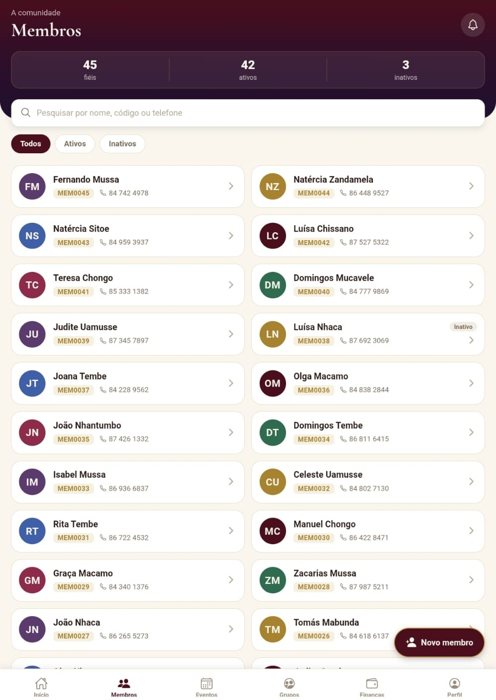

A comunidade inteira, em ordem
Cada fiel tem a sua ficha, com um código próprio, os contactos, a família e o percurso na paróquia. A secretaria encontra qualquer pessoa em segundos, pelo nome, pelo código ou pelo telefone.
- Fichas de membros com ativos e inativos
- Ligar ou abrir o WhatsApp a partir da ficha
- Convite para a app com um código de 6 números
